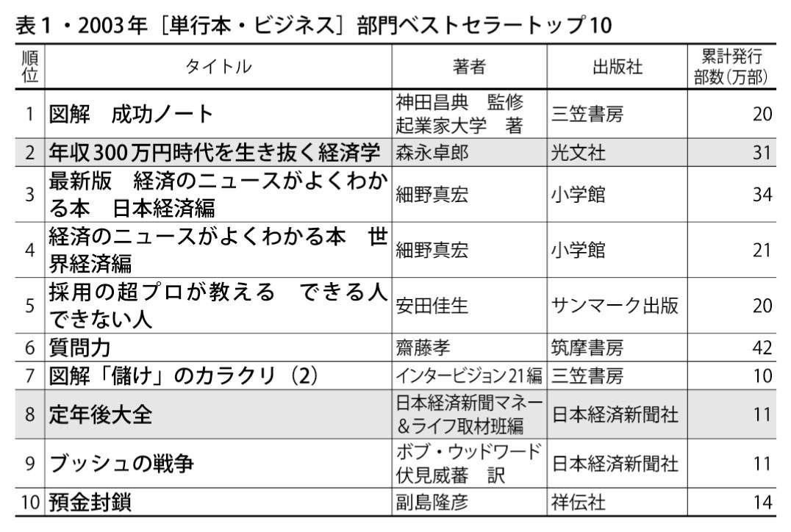
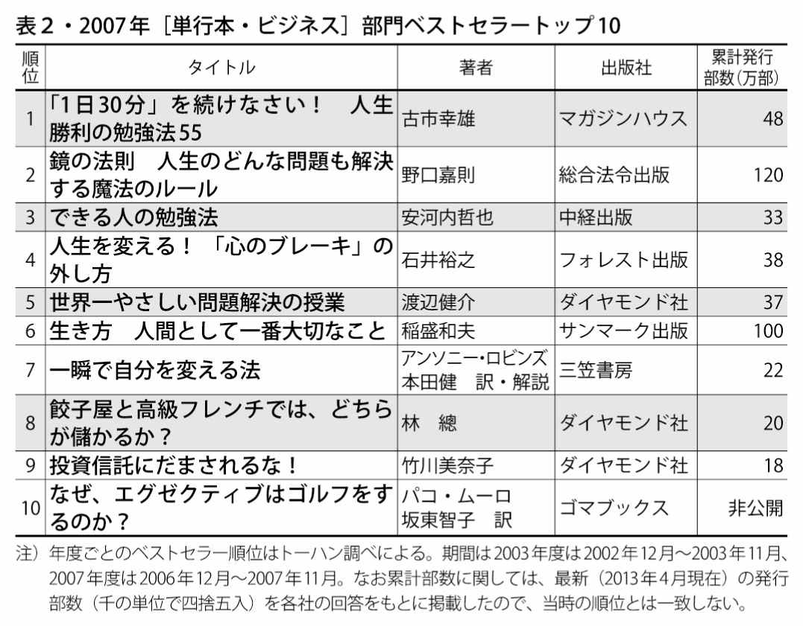
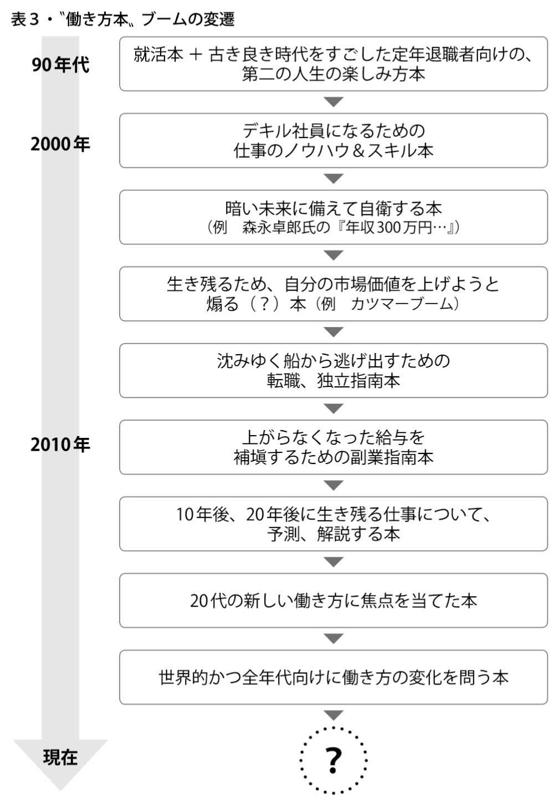
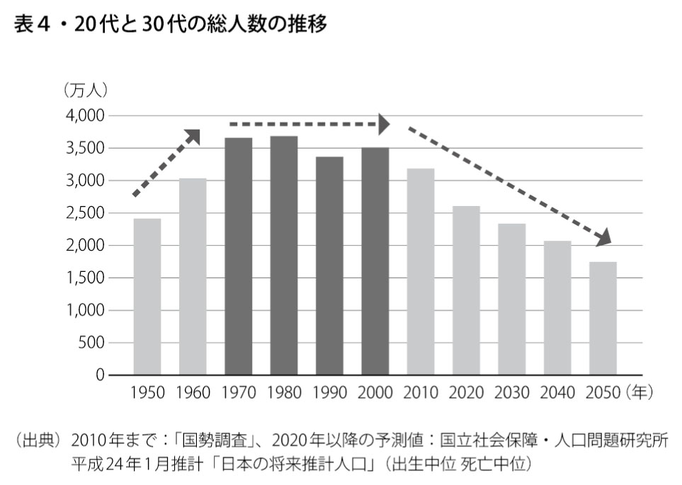
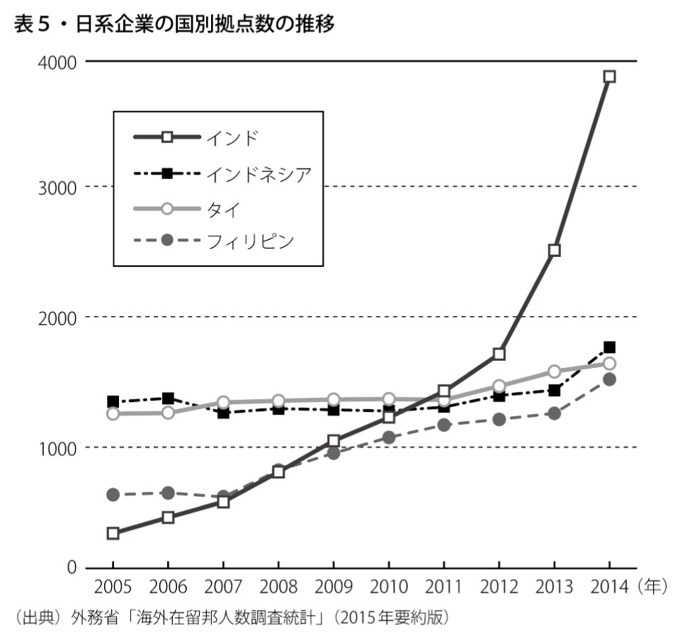
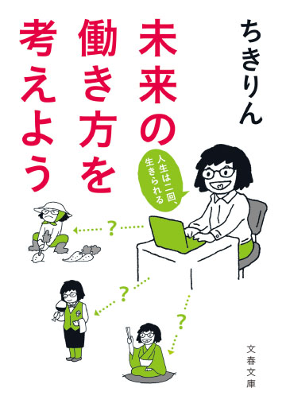

| 「未来の働き方を考えよう」無料お試し版 (文春e-Books) | |
| ちきりん | |
| 文藝春秋 (2017) | |
未来の働き方を考えよう 無料お試し版
人生は二回、生きられる
ちきりん
＊この電子書籍は縦書きでレイアウトされています。
＊読む際のご注意、お断り等については こちら をお読み下さい。
お試し版の発行にあたって
私が『未来の働き方を考えよう』を書いたのは２０１３年の６月で、既に４年も前のことになります。なのにこの本は、電子書籍や文庫本として、今も売れ続けています。その理由は？ ───とても簡単です。私がその時に書いたのは「未来の」働き方についてでしたが、今、それがまさに「現在の」働き方になりつつあるからです。
寿命が延びて人生が１００年となり、働く期間が50 年（半世紀！）を大きく超えてくる時代、その半分のところ、40 代の半ばくらいで働き方を見直そうと勧めても、当時は「40 代での就活なんて無理」「特別な人にしかできない」と言われました。
でも、今やバブル期を超えるほどの売り手市場。深刻な人手不足に悩む企業の多くが、年齢にこだわらない採用を進めており、「35 歳転職限界説」といった言葉についても「それは昔の話」と人材コンサルタントの多くは声を揃えます。サービス業に至ってはシニア限定の採用説明会を開くところもあるほどで、20 代の新卒学生以外は一切採用しないといった頑なな方針では、企業は必要な人材を確保できません。
同じく『未来の働き方を考えよう』では、週に３日だけ働いたり、１年に半年だけ働くことも選択肢になると書きました。これもその後、ヤフー株式会社などいくつかの企業が週休３日を目指すと発表しました。他にも、週に数日しか出社しない在宅ワーク型の働き方や、フリーランス、プロジェクト型の働き方をする人も増えてきています。
副業を積極的に認める企業まで現れ、「朝から晩まで長時間拘束されるフルタイムワークか、自由は利くけれど給与や内容の点で物足りないパートタイムワーク（もしくは時短ワーク）」という二択の世界に、新たな選択肢が登場しつつあります。
なにより、人口減少を起因とするこの人手不足はまだ当面続くので、企業側は人材確保のため様々な工夫（譲歩？）を始めるでしょう。「自分はこういう働き方がしたい」という意思さえあれば、そういった働き方が実現する、そんな時代になるのです。
40 代で新たな働き方が選べる時代になることは、今、40 代の人だけでなく、これから就職活動をする学生さんにも大きな意味があります。なぜなら「新卒就活の一発勝負で一生の働き方が決まってしまうわけではなく、就活では人生前半の働き方を決めればいいだけ」になるからです。
つまり最初の職業人生は、40 代から「自分が理想とする働き方」を実現するための準備期間であり、最初の成功や失敗が、人生全体の成功や失敗に直結するわけではないと考えることができるようになる。一方で、40 代から（80 代まで！）楽しく働き続けるためには、若い時に何を身につけておかねばならないのか。どんな経験をしておくべきなのか──そういった視点もでてくるでしょう。
（この無料お試し版の巻末には、就活前・就活中・就活後に読むと役立つブログ３選も収録しています）
２０１３年に書いた同書では「未来の働き方」が変わっていく要因として、
１．画期的な技術によって、国や企業といった組織より、個人の力が強くなること
２．人口の減る先進国の力が相対的に弱くなること
３．寿命が長くなることにより、求められるスキルセットが変わること
の３つを指摘しました。
最初の技術革新については、当時の予想以上にその進行が加速しています。人工知能やブロックチェーン技術、バーチャルリアリティなど、「よくわからないがスゴイらしい」と思われていた技術は、少しずつ私たちの実生活に入り込み始めました。そういった技術を積極的に使いこなすことで、個人は今までより遥かに大きな力を手に入れることができます。
また、労働人口の減少とそれに伴う人手不足の進展で、個人の働き方に配慮しない組織は、優秀な労働者に選んでもらえなくなります。圧倒的な力をもつ組織と、そのルールに従属するしかない個人という関係は今後、大きく変わっていくことでしょう。
２番目の先進国と新興国の相対的な力の逆転については、私が予想したとおりには進んでいません。先進国同様、新興国もまた様々な問題に直面し、その成長が一筋縄ではいかなくなっているからです。
しかしそれでも、２０１６年に中国で生まれた子供の数は １７８６万人と、日本の出生数97 万人の18 倍。また、中国のスマホユーザー数はすでに７億人を超えており、その潜在力は驚くべきものです。
消費規模だけではありません。今まで新しい製品やサービスの大半は先進国で生まれていました。でも、ＧＰＳを使った乗り捨て型自転車シェアサービスは、まず中国で人気化し、その後にサンフランシスコや日本など海外への展開を狙っています。人口が多い国で成功すると、あっという間に多額の資金が集まり、それにより海外展開への投資資金が得られるのです。
３番目の「平均寿命が１００歳を超え、みんな80 歳まで働く世界がやってくる」という話については、今年になってリンダ・グラットン氏らの『LIFE SHIFT』が大ヒットしたように、多くの人にとって現実味のある話になってきました。
「高齢者の定義を65 歳以上から75 歳以上に変更してはどうか」という議論まで出てくるなど、今後は政府レベルでも（定年の延長・廃止や年金受給年齢の更なる引き上げなど）制度的な議論が始まることでしょう。
そんな中、去年から今年にかけて日本では「働き方」ブームが起こりました。きっかけは大企業で粉骨砕身の働き方を続け、自ら命を絶った電通新入社員のお母様の怒りに労働監督当局が本気の摘発を始めたこと、そして、労働者の環境を守るために、〝お客様〟の利便性を犠牲にすると発表し大きな話題となったヤマト運輸の判断などです。しかし働き方への関心がここまで拡がったのは、「ごく普通に働いている人」でさえ「今の働き方を75 歳まで続けるのは不可能」と感じ始めていたからではないでしょうか。
高度成長期の専業主婦モデルが崩れ、男女とも共働きをしながら育児や介護といった家族としての責務も担い、さらには「個人として輝く」ことも簡単には諦められなくなった今。月曜から金曜まで、朝７時台に家をでて帰宅するのは12 時間後、長期休暇は新婚旅行の時しかとれず、まとまった学び直しの期間もとれないまま75 才まで働き続けるというのは、誰にとっても「理想」「合理的」とは言えません。
政府は「残業削減」や「プレミアムフライデーの早帰り」などを熱心に勧めますが、残業さえゼロになれば、今の働き方が「理想の働き方」だと思える人はどれくらいいるのでしょう？
「自分にとっての理想の働き方、合理的な働き方とはどのようなものなのか」──今こそひとりひとりが社会の刷り込みから逃れ、ゼロから考え直すべきタイミングを迎えています。
『未来の働き方を考えよう』の終章では、自分オリジナルの人生（働き方）を手に入れるために必要な３つのコトについても詳述しています。ぜひ同書をお読みいただき、次の一年を、これからの自分の働き方を根本的に、そしてゼロから考えてみる──そんな一年にしていただければと思います。
「未来の働き方を考えよう」本文試し読み
はじめに
「みんな何歳まで働くんだろう？」──年金支給開始年齢の引き上げや、それに伴う65 歳までの雇用延長のニュースを聞くたび、そう思います。
２０１２年に92 歳で亡くなられた女優の森光子さんは、89 歳まで舞台に立たれていました。ご本人としては、舞台の上で死ねるならそれも本望だったのかもしれません。一方、大橋巨泉氏や上岡龍太郎氏のように、定年のない仕事でも自ら引退を決め、オリジナルのセミリタイア生活に入っていく人もいます。
この「死ぬまで働きたい派」と、「一定期間働いたら、後は違う人生を送りたい派」の人はどの世界にもいて、サッカー界では『やめないよ』の著書もある三浦知良氏のように40 歳を超えても現役を続ける人と、「まだ十分やれる」と惜しまれながら引退した中田英寿氏の判断は対照的です。野球界でも、選手生命が短いと言われる投手でありながら50 歳近くまで現役を続けた工藤公康氏と、早々と引退した新庄剛志氏の引退タイミングの違いには、それぞれの人生観が表れています。
そして本来、芸能人やスポーツ選手だけでなく一般の人にとっても、いつまでどのような形で働くのかということは、それぞれの人の生きざまにかかわる重要な判断事項のはずなのです。
しかしながら、現在進行中の雇用年齢延長の背景は、単なる財政問題に過ぎません。「年金財政が厳しいから、支給開始年齢を引き上げます。ついては、皆さんそれまで働き続けてください」という話です。ひとりひとりの個人にとって生き方の選択とも言える働き方が、そんな理由で決められていくなんて、おかしな話だと思いませんか？
たしかに年金ももらえないのにさっさと引退してしまうなんて、誰にでもできることではありません。だからといって、みんな政府に言われるままに働く期間を５年延ばし、65 歳まで今の働き方を続けるのでしょうか？ なにかもうちょっと自らの手に、働き方に関するコントロールを取り戻す方法はないのでしょうか？ 年金の支給開始年齢は今後さらに引き上げられ、今の若い人たちは70 歳まで働くことになる可能性も高いのです。これではまるで、延々と続く撤退戦のようです。
もちろん、「一生働きたい！」人もいるだろうし、今回の雇用年齢の延長が心から嬉しいという人もいるのでしょう。でも私には、これ以外の働き方、辞め方が一切存在しないとは、とても思えません。固定観念を排してしっかりと考えれば、個々人がより主体的に未来の働き方を選択する手段は、なんらか存在しているはずなのです。
実は、定年延長は先進国共通の動きです。早くから引退して悠々自適の老後を楽しむイメージが強い欧州ですが、定年はドイツやフランスでも、60 代前半から60 代後半へ引き上げられつつあり、イギリスは65 歳だった定年を廃止して、現在は定年年齢による解雇を原則禁止にしています。どの国も日本同様、高齢化や大幅な財政赤字など深刻な問題を抱えているからです。
加えて先進国に暮らす人たちの働き方は、本格化するグローバリゼーションやテクノロジーの進化によって、新たなチャレンジを受け始めています。先進国の人の仕事の多くが、新興国の人や、新たに出現したテクノロジーに置換されつつあるからです。
地球全体から見れば極めて豊かな生活を謳歌してきた私たち日本人も、今までと同じ働き方のままでは、その生活を維持することが難しくなります。これからは働く場所も仕事内容も否応なく変わっていく。そんな中、「いつまで、どのように働くのか」ということが、国籍や年齢にかかわらず、先進国で生きる人全員に問われているのです。
次の10 年間で、私たちの働き方は大きく変わるでしょう。それは今、20 代の人も40 代の人も、そして今はまだ小さな子どもたちも避けては通れない本質的な変化となるはずです。
一生懸命勉強していい大学に進み、いい会社に入る。今はまだそういった成功パターンも残っています。その一方、もうそれだけでは安心できないと感じる人も増えてきました。「それよりも、もっと大事なこと」が見え始めているように、思えるからでしょう。では、いったいそれは何なのでしょう？ これからの社会を生き抜くために、私たちに必要なものは何だというのでしょう？
本書は、現在起こりつつある社会の変化、世界の変化を見据えたうえで、私たちの働き方が今後どうなっていくのか、それに対して私たちはどう対応すべきなのか、ということについて、私の考えをまとめた本です。
これから起こる社会、そして働き方の変化の中には、望ましいこともそうではないこともあるでしょう。しかし重要なことは、政府や企業が決めたルールを黙って受け入れるのではなく、ひとりひとりが自分で自分の働き方を選んでいくという気持ちをもつことです。
正しい生き方、正しい働き方などというものは存在しません。また、自分には今の働き方以外、何も選択肢はないなどと、最初からあきらめてしまう必要もありません。私たちは今、自分なりの働き方を選べる時代に生きています。それは正規か非正規か、会社員かフリーランスかといった従来型の区分でもありません。もっと自由に考えることで、従来とはまったく異なる新しい働き方が見つけられるはずなのです。
20 代や30 代という若い時から、老後の心配をしている人が多いと聞くと、暗澹たる気持ちになります。たしかに、探せば将来の不安の種はいくらでも見つけられるでしょう。でも、人生で最も楽しい20 代、30 代の時間や、働き盛りで視野も世界も拡がる40 代、50 代という期間の多くを「将来の備え」のために費やすなんてつまらなすぎます。そうではなく、不安な未来をワクワクできる未来に変えていくために自分には何ができるのか、どう考えればいいのか。本書を読みながら、ぜひ考えてみてほしいのです。
序 章 〝働き方本〟ブームが示すモノ
時代を映すビジネス書ベストセラー
書店に数多く並ぶ仕事や働き方に関する本には、時代の移り変わりが見事に映しだされています。
以前は定年を迎える人向けに、退職金で蕎麦屋を始める方法を指南したり、海外でのロングステイやＵターンでの田舎暮らしを勧める本をよく見かけました。それらの本には、古き良き時代を働き終えた人たちの幸せな人生が、そのまま投影されていました。
勤め先企業がすべての社員に定年までずっと、十分な給与と仕事、さらにやりがいまで与えてくれた時代には、新卒向けの就活本と、楽しい余生の送り方に関する本があれば、それで十分だったのでしょう。
けれど最近は、ゆとりある老後にはいくらのお金が必要かという試算から始まり、年金を減額されない上手な働き方とは、といった内容の本が目立ちます。働き方に関する本ほど、時勢をよく表すものはありません。
１９９１年のバブル崩壊から10 年近くが過ぎ、いよいよ状況が厳しくなった頃には、大前研一氏の『サラリーマン・サバイバル』（１９９８年 小学館）や、落合信彦氏の『勝ち残りの「生き方」』（１９９９年 ザ・マサダ）など、大御所の著名人が語るサバイバル本が人気を博しました。ロバート・キヨサキ氏の『金持ち父さん 貧乏父さん』（２０００年 筑摩書房 １８８万部）も、賢くお得な人生を選びたいと考える人の心をがっちりつかんでバカ売れしています。
おもしろいのは２００３年のビジネス書ベストセラー（表１）で、２位には森永卓郎氏の『年収３００万円時代を生き抜く経済学』が、８位には『定年後大全』が入っています。年収が下がっていく厳しい未来に直面する若い世代向けの本と、働く人生を逃げ切りで終えようとする団塊世代向けの本が、ビジネス書のベストセラー上で交錯したのです。

その後は、本格的なスキル本、自己啓発本ブームが到来します。２００７年のビジネス本ランキング（表２）では、１位が『「１日30 分」を続けなさい！ 人生勝利の勉強法55 』、３位が『できる人の勉強法』、５位が『世界一やさしい問題解決の授業』と勉強するための本ばかりで、いかに社会人がスキルアップに必死になり始めたか、よくわかります。

８位の『餃子屋と高級フレンチでは、どちらが儲かるか？』も、会計に関する勉強本です。「会計なんて経理部の人だけがわかっていればよい」という時代は、「英語なんて国際部門の人だけが話せればよいのだ」という時代と共に終 焉 を迎え、会計も英語も、すべての社会人に必須のスキルとなったのです。
続いてその直後には、『無理なく続けられる年収10 倍アップ勉強法』（２００７年 ディスカヴァー・トゥエンティワン）や『効率が10 倍アップする新・知的生産術 自分をグーグル化する方法』（２００７年 ダイヤモンド社）などを書いた勝間和代さんが大ブレークしています。
翌年に出た『はじめての課長の教科書』（酒井穣 ２００８年 ディスカヴァー・トゥエンティワン 12 万部）や、ライフネット生命の副社長、岩瀬大輔さんが書いた『入社１年目の教科書』（２０１１年 ダイヤモンド社 17 万部）も、時代を象徴しています。
その昔、仕事の方法論は会社の上司や先輩から学ぶものでした。でも今や社会人にとって、ビジネス本から仕事のスキルを学ぶことは、ごくあたりまえのこととなりました。組織の中間管理職である課長としてのスキルも、社会人１年目のお作法も、厳しくなる雇用環境に危機感をもった人たちが、自ら勉強するものとなったのです。
働くことの意味を問い始めた若者たち
さらに働き方に関する本は、企業外でのサバイバルを意識したものにシフトしていきます。転職のノウハウ本や、いつ会社が潰れても生きていけるよう、独立、起業の方法を教える本、フリーランスで食べていくための心得や、本業での収入の伸び悩みを埋め合わせるため、週末起業やネットから副収入を得る方法を教える本などが、その例です。
最近は大企業が次々と経営不振に陥る中、『10 年後に食える仕事 食えない仕事』（渡 正裕 ２０１２年 東洋経済新報社）や、『２０２２─これから10 年、活躍できる人の条件』（神田昌典 ２０１２年 ＰＨＰ研究所）といった本が10 万部以上を売り上げています。
盤 石 と思われた電力会社の未来に暗雲が垂れ込め、10 年前までエクセレントカンパニーだった大手企業が数千人のリストラを実施する時代です。不可能と知りつつも、将来まで安泰な企業を探したい、知りたいと思う人が多いのでしょう。
そんな中ここにきて目立ち始めたのが、若者の新しい働き方に焦点を当てた本です。それらはテクニカルなノウハウ本ではなく、働き方や生き方について、根本的な姿勢や価値観を問い直すものです。
「日本一のニートを目指す」と称してシェアハウスで暮らし、京都大学を卒業したにもかかわらずできるだけ働かない人生を目指しているｐｈａ さん（ネット上での通名）の『ニートの歩き方』（２０１２年 技術評論社）や、大手出版社を辞めて個人で働こうとする安藤美冬さんの『冒険に出よう』（２０１２年 ディスカヴァー・トゥエンティワン）など、実際に今までとは異なる生き方、働き方を選んだ人たちによる体験談の出版が相次ぎました。
他にも、就職せずにＮＰＯで働くことを選んだ若者や、組織に属さず、ブログやサイト運営など、ネット上の個人活動だけで食べていくことが可能だと説く人の本も多数、目にします。
就職活動の乗り切り方や、10 年先まで残る企業や職業の選び方ではなく、そういった競争に参加すること自体を否定する若者の本の増加は、低成長時代をむかえた現在の日本の環境下で、ひたすら頑張ることへのアンチテーゼのようです。
私も『ゆるく考えよう』（２０１１年 イースト・プレス）で、「高すぎる目標をもたず、低い目標で成功体験を積んだ方が人生は楽しくなる」とか、「できないことには早めに見切りを付け、できる範囲でやりたいことをやって楽しむ人生の方がよいのでは？」などと提案してきました。
頑張っても報われないことが多くなった時代には、これまで主流とされた生き方を選ばない人が増えるのも当然です。最近はアシスタント職としての就職を希望する男子学生が増えていると聞きますが、今後は専業主夫を希望する男性も増えそうです。団塊世代には「ふざけるな！」と怒られそうなそんな考えも、これからはひとつの自然な選択肢となるのでしょう。
次々と発売される若者向けの新しい働き方、生き方の本は、日本の現状とその先行きに対する彼らなりの決意の表れです。それは、「我慢して今までと同じ働き方を続けても、おそらく報われることはない。だったらいっそ、自分たちが生きたいように生きよう！」というメッセージなのです。
『ワーク・シフト』の世界的ヒット
そして２０１２年、働き方本ブームを象徴する、一冊の本が出版されました。ロンドンビジネススクールの教授、リンダ・グラットン氏の『ワーク・シフト』（プレジデント社 10 万部）です。この本を題材に私が主催したネット上のソーシャル・ブックリーディング（ツイッターを使った読書会、２０１２年10 月６日開催）は、２時間で３０００以上のツイートが寄せられる大盛況となりました。
この本はイギリスで出版された『THE SHIFT』の日本語訳で、グローバル化や情報技術の進展など大きな変化が起こりつつある中、ひとりひとりが今までと働き方や考え方を変えることで、暗い未来も明るい未来に変えられると説きます。
著者はこの本を、自分の息子らへのメッセージとして書いているのですが、全体で４０２ページ、２１００円もするハードカバーのビジネス書を読みこんだのは、若者だけではありません。若い世代だけでなく、より広い年代の人が「働き方に関する根本的な意識変革が必要になってきた」と感じ始めたのです。
またこの本では、これから求められる働き方の変化が、日本だけで起こるものではなく、世界全体で起こりつつある現象だと指摘されました。これまで私たちは失われた20 年という言葉を使い、バブル崩壊から長期間立ち直れず、国際競争力を失いつつある日本で、いかにサバイブすべきかと悩み、考えてきました。
しかし『ワーク・シフト』には、変化を迫られるのは日本だけではなく、世界中のすべての人が、働き方や仕事に関する価値観を根本的に変えていかねばならない、と書かれています（この本は、世界10 カ国で出版されました）。
今や、若い人だけでなくすべての年代の人が、そして、日本固有の事情としてではなく世界の潮流として、働くことを人生の中でどう位置づければよいのか、考えるべきタイミングを迎えているのです。
私のブログ、「Chikirinの日記」（http://d.hatena.ne.jp/Chikirin/）でも、働き方に関するエントリは、常に大きな反響を呼ぶ人気分野です（巻末に関連エントリの一覧表付き）。多くの人がこれからの働き方について、不安を感じ、悩み、なんらか新しい方法や考え方を見つけようと、模索し始めているためでしょう。
しかし、そんな中で必要なのはデキるビジネスパーソンになるためのノウハウでも、20 年後まで残る仕事を選別するための目利きの方法論でもありません。必要なのは、組織と個人の関係性や家族の在り方も含めた本質的な働き方について、ひとりひとりがゼロベースで考えてみることなのです。

第一章 現状維持の先にある未来
■延び続ける定年
皆さんは自分が何歳まで働くのか、考えたことがあるでしょうか？ 20 ～30 代までは、想像したこともないという人が大半でしょう。早くとも40 代半ばまで、そんなことは意識もしないのが一般的です。
そういった状況で「いつまで働くのか、とにかく答えよ」と詰め寄られれば、勤め人の多くが「定年まで」と答えます。これは便利な回答です。会社が決めてくれるのだから、自分のアタマで考える必要がありません。また、定年はみんな同じタイミングで迎えるので、まさに横並びです。勤め人にとってそれは、無思考ではあるけれど無難でまっとうな答えなのです。
しかし昨今、状況は大きく変わりつつあります。政府が、年金の支給開始年齢を引き上げたい（引き上げざるをえない）という理由で、雇用の延長を推進しているからです。
現在、１９６１年４月２日以降に生まれた男性と、１９６６年４月２日以降生まれの女性に関しては、国民年金、厚生年金とも65 歳からの支給開始が確定しています。これらの人たちの年金支給年齢は〝早くて〟65 歳なのです。
これに併せ、企業の雇用義務も、順次65 歳まで引き上げられます（「高年齢者等の雇用の安定等に関する法律の一部を改正する法律」２０１３年４月施行）。そうしないと、定年から年金の支給開始までに無収入の期間が生じるからです。
しかも年金の支給開始年齢の引き上げは、65 歳で止まるとは思えません。厚生労働省は７年も前から「70 歳まで働ける企業の普及・促進」活動を始めており、「平成24 年度高年齢者雇用就業対策の体系」（２０１２年４月１日現在）にも、「企業の実状に応じて何らかの仕組で70 歳まで働ける企業の普及・促進」という文言が入っています。
社会保障制度改革国民会議会長を務める清家篤慶應義塾塾長も既に、「個人的には年金支給のさらなる年齢引き上げは必要だと思う」とし、「65 歳定年を固めて、将来は70 歳まで雇用を延ばす」と発言されています（「週刊東洋経済」２０１３年１月26 日号）。
つまり、今30 歳未満の人たちに関しては、年金は70 歳を超えてからの受給となる可能性が濃厚であり、さらに若い今の小学生などは、70 歳を超えてもまだ働かねばならないかもしれないのです。
70 歳まで働くということ
こういう話を聞いて、皆さんはどう思われるでしょう？ 「年金がもらえる年齢まで、働かせてもらえるのはありがたいことだ」と思いますか？
私が初めてこの話を聞いた時の率直な感想は、「70 歳まで働くなんてありえない......」というものでした。私にとって70 歳というのは、少なくとも40 代と同じようにフルタイムで働く年齢ではありません。そんな年齢までこんな働き方を続けたら、仕事だけで人生が終わってしまいます。そして、自分がそういう人生を望んでいるのかと聞かれたら、私の答えは明らかに 〝ＮＯ〟です。
全員が私と同じ考えだとは思いません。世の中には80 歳、90 歳まで元気で働いている人や、働きたいと考えている人もいます。しかし、雇用年齢のエンドレスに見える引き上げは、「自分は本当にそんな年齢まで働きたいのか？」という問いを、多くの日本人に突きつけるはずです。
これまでは定年を区切りとして、「働く人生」と「引退後の人生」のバランスがとれていました。前半は仕事や家事・育児を中心とした多忙な人生、後半は個人生活を優先する、ゆっくり＆ゆったりとした人生です。
日本人の平均寿命は男性80 ・50 歳、女性86 ・83 歳（２０１４年。厚生労働省 簡易生命表）ですから、60 歳引退なら、大卒の場合、働く期間＝37 年間に対して、引退後の人生は20 年もありました。
しかし70 歳がその区切りになれば、引退後の人生は男性ではなんと10 年ほど、女性でも17 年弱になる一方、働く期間は大卒でも23 歳から70 歳までの47 年となり、定年前後の人生の長さは大きくバランスが崩れます。特に男性の場合は、ほとんど働くだけで人生が終わってしまうのです。これは、本当に私たちが望んでいる働き方でしょうか？
なによりも皆さんは、「70 歳まで今と同じように働く自分」をリアルに想像できますか？ 今の会社でずっと働けるとしたら、60 歳から70 歳の10 年間、あなたはどの部署で、どんな仕事をしているのでしょう？ その時の上司や部下の年齢は何歳なのでしょう？
そもそも雇う側の企業も、雇用年齢の延長に諸 手 を挙げて賛成しているわけではありません。高齢者の給与は新入社員より遥かに高いし、健康状態や、新しいことを覚える意欲や柔軟性、業務指示の出しやすさなどを考えれば、若い人を優先して雇いたい企業が圧倒的に多いのです。一部の熟練工や超優秀な営業担当などを除き、全社員を70 歳まで継続雇用するなど、できれば避けたいというのが企業側の本音です。
このため法律で雇用の年齢引き上げを求められた企業は、高齢社員の給与を大幅に切り下げ、管理職ポストから外して仕事の権限や業務範囲を縮小するなど、さまざまな工夫を始めています。その結果、たとえ70 歳まで雇用が維持されても給与は大幅に下がり、（自分より30 歳も年下の）40 代の上司の下で働き続けることになる人も出てくるのです。
しかも、若い頃には想像もしていなかった体力や健康の衰えにも見舞われます。30 代でさえ苦痛な朝の通勤ラッシュは、60 代の体力ではどれほどつらいことでしょう。40 代半ばから始まる老眼で、細かい資料やスマホ画面が見づらくなり（スマホを見る時とＰＣを見る時では、異なる眼鏡を掛ける必要があるんです！）、腰や膝を痛め、重い鞄を持って階段を上るのもつらくなります。
今の日本人の働き方は、55 歳が定年であった高度成長期から大きく変わっていません。せいぜい土曜日が休みになった程度で、今でも有給休暇を１００％取得できない人、相変わらず長い残業が日常化している人も少なくありません。
だからこそ多くの人が、「引退後は夫婦でゆっくり趣味や旅行を楽しもう」と、第二の人生に期待してきたのです。別の言葉で言えば「ゆっくり休むのは定年後にどうぞ。定年前は有給休暇もとらず、残業も厭 わないでね」というのが、今までの日本の労働慣習でした。
けれどもしも70 歳まで働くことになっても、私たちは同じ働き方を受け入れられるでしょうか？ 70 歳で定年退職した後に夫婦でゆっくりと海外旅行を楽しむなんて、本当に現実的なのでしょうか？
厚生労働省の資料やこれからの高齢化の推定値を見ると、現在20 代以下の方にとって、「70 歳定年」の世界は、ほぼ確定した未来に思えます。もう一度、考えてみてください。年金の支給開始年齢が70 歳まで延長された時、あなたは本当にその年齢まで、今の職場で今の仕事を続けていたいと思いますか？
■家族の形が変わる
未来の働き方を考える時、働く期間の長期化以外にも、今とは大きく変わると予想されることがあります。それは家族の形です。
今の日本では少子化が深刻な問題とされ、国会でもメディアでもその対策が熱心に話し合われています。けれどそれらはどれもこれも、私にはとても呑気なものに思えます。なぜならその大半が、現時点で存在する問題への対策にすぎず、これからまだ状況が劇的に変化するのだという「未来の変化」を織り込んだ議論になっていないからです。
たとえば少子化に関しては、補助金（児童手当、子ども手当など）の額や配り方、保育所の待機児童対策や、男性の育児参加（育児休暇取得や残業削減）の推進などが検討されています。たしかにこれらは、現状の改善には有効な施策です。けれど「将来の少子化問題」は、本当にそんなことで解決できるものなのでしょうか？
経済紙を読んでいると、「○○企業が、インドネシアでの事業を拡大する」、「○○会社は南米に新たな工場を立ち上げる」といったニュースを連日のように目にします。「新卒採用の一定割合を留学生とする」、「○○本部の拠点を、シンガポールに移転」といった記事も見かけます。
こういった動きの背景には、「今後、市場としての日本には、大きな将来性はない」という企業の判断があります。日本で成長が見込まれるのは、医療や介護を始めとする高齢者向けの市場ばかりで、壮年、若者が主な消費者である財とサービスの市場規模については、原則として右肩下がりが確定しています。
表４は、日本における20 代と30 代の人口総数（20 歳から39 歳までの総人数）を時系列に比べたグラフです。１９５０年から１９７０年にかけて、この層の人口は大幅に増加しています。

20 歳から39 歳というのは、大いに飲んだり食べたりし、働き始めればスーツや仕事道具を買い、おしゃれもスポーツも楽しみ、そのうち結婚して子どもを産み育て、さらには不動産や自動車、家電を買う消費意欲の高い層です。
この層が主な購入者である財やサービスとは、食料品やお酒、外食はもちろん、衣料品、出産や育児用品から教育サービス、映画やゲーム、書籍や雑誌などのエンターテイメント、自動車や家電から通信や情報端末、住宅やインテリアなど多岐にわたります。
表４でわかるように、１９７０年代までは、この層の人数が急増しています。これなら何を作ってもよく売れたのはあたりまえです。しかも当時は人数だけでなく、１人当たりの収入も増えていました。
しかし１９８０年以降、この層の人数は全く伸びていません。２０００年までの数十年間、ほぼ横ばいです。これが日本経済における〝失われたウン十年〟のベースとなっています。最も消費意欲の高い層の人数が横ばいでは、企業があの手この手のマーケティングを尽くしても、なかなか売上が伸びないのは当然です。そしてこれからこの市場がどうなるのか。グラフの下がり方を見れば一目瞭然でしょう。
人口が減っても１人当たりの消費額が多くなれば、全体の売上は維持できます。しかし現実には、これからの若者が今までよりも、より多く飲み食いしたり、より頻繁に旅行に行ったり、より高い自動車や家を買ったりは、しそうにありません。
今の若者は、将来の収入の伸びも見込めず、節約意識も高いのです。彼らが消費を増やすものの大半は、ネット企業などが提供する格安の商品ばかりであって、それらは既存の財やサービスの「より安い代替品」として消費が伸びるだけです。
誤解のないように書いておきますが、私は、日本の若者向け市場の総額に関して、縮小傾向が確定的だと言っているのであって、個別の企業にとって日本市場にチャンスがないと言っているわけではありません。
たとえば、ネット上で旅行の予約ができるサイトを運営している企業なら、売上はまだいくらでも伸ばせるでしょう。しかしそれは、旅行関連の消費総額が伸びることを意味するわけではありません。インターネット上の英会話学校や、スマホやタブレットで勉強を教えるネット家庭教師やｅラーニング・プログラムも有望です。しかし、だからといってこれからの日本で、教育産業全体の売上が伸びると考えるのは楽観的すぎるでしょう。
出来合いの総菜や、食材や食事の宅配サービスも伸びると思いますが、これだけ若い人の人口が減るのに、日本全体の食料購入額が大きく伸びるとは考えにくいです。低価格でおしゃれな眼鏡を販売する企業の売上も急増しています。しかし、格安眼鏡を楽しむ若者がファッションにつぎ込むお金の額は、ブランドモノでおしゃれを楽しんでいたバブル期の若者が使っていたお金の額より、大きくはなりえません。
これからも、利便性の高いネットサービスを提供したり、時間の節約になる商品や格安商品を売る企業を中心に、日本市場で急成長を遂げる個別企業は数多く出てきます。しかし日本全体で見れば、20 歳から39 歳の人たちが使うお金の総額は、表４の人口減少スピードとほぼ同じ勢いで減っていくと考えるのが自然です。そしてそれは、２０１０年から２０５０年までで、45 ％（ほぼ半減！）にも及ぶ劇的な減少率なのです。
消費総額が半減すれば、企業側の売上も半減します。中でも問題が大きいのは、年功序列によって年収が高くなった大量の中高年正社員を抱える伝統的な大企業です。高コスト体質の企業は、成長するネット事業や格安商品を提供するビジネスに、積極的に乗り出すことができません。
このため、そういった企業の多くが、人口と所得が伸び続ける海外の新興国に活路を求めています。日本の大企業にとって、アジアや南米、中東やアフリカはすでに、とても重要な市場です。そして、それらの企業で働くことになる今10 歳以下の日本の子どもたちは将来、ごく自然なこととして、「インド人に車を売る」、「中国人に化粧品を売る」、「ブラジルで工場立ち上げの支援をする」といった仕事に就くことになるのです。
これまでの世代の人たちが、日本で日本人にモノを売る仕事に就き、かつ、そういう仕事をやっていればどんどん給与も上がってきたのは、表４で見たように、日本が市場として成長し続けていたからです。残念ながらこれからの子どもたちには、そういう未来は用意されていません。
現在10 歳以下のお子さんをおもちの方は将来、「インドからの電話で孫の誕生を知る」とか「今年の夏休みには、メキシコから孫が初めて帰ってくる」という体験をし、なかには、「うちの嫁はインドネシア人でイスラム教徒だから、家にお祈りのスペースを作ったの」といったケースさえ出てくるでしょう。自分たちが年老いて、夫婦のどちらかが入院！ というような時にも「早くドバイの息子に連絡して！」と叫ばねばなりません。
「子どもには英語を勉強させたほうがいいだろうか」って？ そんなことはどっちでもいいんです。インドで必死に働けば、誰でも５年後には立派なインド英語の話者になります。わざわざお金をかけて英会話学校に行かなくても、必要性が高まれば、語学なんてすぐに上達します。日本人が英語が苦手なのは、これまでの日本では、生活するにも働くにも英語などほとんど要らなかったからです。
現時点で10 歳以下の日本人が生きることになる世界では、そんな贅沢は許されません。オランダ（人口約１６７４万人）やスウェーデン（人口約９５０万人）では、大半の人が流暢な英語を話します。人口の少ない国＝市場が小さな国の人は、ドイツやフランスなど市場の大きい国の人と比べて、とても英語が上手です。若者人口が急減し、国内市場だけでは食べていけないとなれば、日本人の英語力も急速に上達することでしょう。
〝イクメン〟どころの騒ぎじゃない時代
さらに深刻な問題は、海外で働く人が増えることにより、家族のあり方に大きな影響が出てくることです。
これからは今よりずっと多くの日本人が、しかも長期間、海外で働くことになり、行き先も西欧先進国だけにはとどまりません。商社を含め、素材、エネルギー関連など資源系の業務が多い企業では、中東、南米、オーストラリアや中央アジア、極東ロシアなどへの赴任が増えるでしょう。既に特定の事業本部を、丸ごとアジアに移し始めた企業もありますが、そういった事例も、今後は珍しくなくなるはずです。
箔付けと視野を広めることが海外赴任の目的であった時代には、その期間は数年程度でした。しかしこれからは海外を転々としながら、キャリアの大半を海外で積む人も出てきます。日本市場が縮小するのですから、「日本の本社で出世するために、海外支社で数年の経験を積む」なんて無意味です。そうではなく、主な収益源である海外の市場で、何十年も働くことが普通になっていくのです。
そういう状況において、結婚生活や子育てスタイルは、どう変化するのでしょう？ 以前のように「夫が数年だけパリに駐在」するのであれば、専業主婦の妻と子どもを連れて赴任することができます。そういう都市なら子育ての環境も整っていました。
けれど、赴任先がケープタウンだ、チリの鉱山の近くの町だ、ムンバイだ、ウラジオストクだ、ということになり、しかも２年じゃなくて５年だ、10 年だ、もしかすると複数国を回ってもっと長くなるかも、と言われたらどうでしょう？ 妻と子をそれらの国に連れて行き、あちこちの国で子どもを現地校に通わせて育てますか？

もっと大変なのは、自分もキャリアを積みたいと考える既婚女性です。夫の海外赴任がニューヨークで２年だというなら、休職して一緒に渡米し、英語を学んだり、現地の大学で学位をとったり、もしくは、２年くらいなら別居生活を楽しむのも悪くないでしょう。しかし赴任先が中東やアフリカで、期間も５年だという話になれば、仕事を辞めてついていくことも、はたまた別居して暮らすことも、かなりやっかいな話となります。
今の日本では、夫・妻とも東京での勤務であれば、不十分とはいえ子育て環境も整う方向に進んでいます。なによりも男性が〝イクメン〟（育児に熱心なメンズ）を目指す時代です。けれど仕事をもつ女性にとって、南米の鉱山開発の仕事を担当し、１年に何度も南米への長期出張を繰り返す夫と共同で子育てをするのは、どんなに夫がすばらしきイクメン君であっても、極めて難しいことのはずです。
更に言えば、既に既婚女性に海外赴任を命じる（打診する）企業も出てきています。多くの場合、それらはキャリア上の大きなチャンスです。夫婦のうち、妻はインドに赴任が決まり、夫はアラスカで資源開発だと言われるかもしれないのです。そうなれば、このふたりはいったいどうやって子育てをするのでしょう？
現在は共働きの家庭において、妻の実家（母親）が育児を支えているケースがよくあります。しかし妻に海外転勤の辞令が出れば、それも難しくなります。それとも、実家のお母さんも娘の海外赴任についていきますか？ 自分の夫をほっぽって？
「家庭と仕事の両立」は男女共通の課題へ
日本企業に先んじて世界展開を進めてきた欧米企業には、グローバルローテーションで経営者やマネージャーを育てる企業がたくさんあります。どこの国で採用された人でも一定の経験を積めば（一方的な赴任命令ではないですが）、他国のオフィスで経験を積んでみないか、という話になるのです。
そういったオファーがあった時、喜んで赴任する人もいれば、家族と相談して赴任を断る人もいます。断ると会社に残れない場合もあり、その時は転職します。
赴任をする場合、欧米人で単身赴任を選ぶ人は少数派です。たいていは配偶者も赴任先に同行し、現地で新たな仕事を探します。妻が夫についていく場合もあるし、妻の転勤に夫がついていくこともあります。
「妻が香港ですごくいい仕事をオファーされたんだ。だから自分も退職してついていくことにした。ボクが現地で仕事を見つけるまでは、子育てを担当するつもり」などと言うカップルに、外資系企業では普通に出会います。彼らは順番にキャリアチャンスを譲り合い、支え合っているのです。
私は全く同じことが、そのうち日本人夫婦にも起こるだろうと考えています。今までなら妻が妊娠した時に「やったー、でも、オレは今の仕事を続けられるのか？」と考える男性はほとんどいなかったでしょう。一方で働いている女性は、妊娠となればほぼ全員が「仕事はどうしよう？」と考え、中には「首にならないかな」と心配になる人もいたはずです。
でもこれからは、男女両方がこの問題を同じように受け止める時代がやってきます。考えてみてください。共働きの妻の妊娠中に、夫に南米への転勤辞令が出て、５年は戻ってこられないとなったら、このふたりはいったいどんな選択をするのでしょう？
妻が仕事を辞めて専業主婦となり、赴任先に同行して、南米の鉱山近くの街で赤ちゃんを育てますか？ それとも妻が日本に残って仕事をしながら、ひとりで子育てをするのでしょうか？ それに加えて「オレが南米への赴任辞令を断るべきではないか？」と、男性側がキャリアを変更する可能性も、検討することになるとは思いませんか？
小さな子どものいる共働き夫婦で、妻に海外赴任の打診があった場合も同じです。それが妻にとって大きなキャリアチャンスだとしましょう。夫は妻に「子育てのために赴任を断れ」と言うのでしょうか？ それとも「子どもはオレが日本で育てるから、安心して海外に行ってきなよ」と言いますか？ 「オレが仕事を辞め、彼女の転勤についていくべきじゃないか？」と考えたりはしませんか？
これまでほとんどの男性は、「出産・育児のために自分の働き方を変える」という検討をしてきませんでした。そういう判断を迫られるのは99 ％女性側だったのです。けれど、これからはそれも変わります。一気に半々になったりはしないでしょうが、男性側にも「妻が妊娠したので、会社を辞めます」とか「妻が海外に転勤するので、私もついていくことにしました。なので退職します」という人が、少しずつ増えていくはずです。
皆さんが既に管理職であるならば、海外赴任の辞令を出した男性部下が、「妻と相談しましたが、もうすぐ二人目の子どもも生まれるし、私には海外赴任は無理です」と断ってくるかもしれません。家庭と仕事の両立はこれから、男女共通の課題となるのです。
このように、今とは全く異なる課題に直面することになる次世代のワーキングカップルにとって、国内の保育所の定員が増えることは、大きな助けにはなりません。「男性でも積極的に育児に参加する人が増えています！」と無邪気な特集を組むマスコミの報道は、牧歌的で微笑ましいものです。たしかに当面の課題としては、そういった対策も有用でしょう。しかし、今の中学生が結婚する頃には、それどころではない時代がやってくるのです。
（続きは製品版をご購入の上、お楽しみ下さい）
解説 明るい働き方を実現するための指南書
柳川範之
本書が単行本で出たときのことは、とても鮮明に覚えています。同じころに出した拙著と、問題意識や提言がかなり共通していたからです。その後、ちきりんさんとは、トークイベント等で直接お会いする機会もありました。その際、考えていることがとても似ていることを再認識して、意気投合。その後に出した私の新書では、帯の言葉まで書いて頂きました。
ちきりんさんといえば、あのイラストがすぐ思い浮かびます。実物のちきりんさんもイラスト通りの飾らない人柄と気配りのきいた話しぶりで、人をひきつける魅力にあふれた人です。その魅力はどこから来ているのだろうと考えてみると、やはりご本人が「楽しいことだけして暮らす」ことに徹しているからなんだろうなと思います。
その辺りのことは、本書を手に取られているちきりんファンの皆さんのほうが、きっとずっとお分かりなのだと思いますが、そういう潔さや清々しさみたいなものが、話しぶりやしぐさにも、そして本の語り口にも、にじみ出ている気がします。
そんな、ちきりんさんが、未来の働き方を真剣に考えたのが本書。ＩＴ化やグローバリゼーションなどによっておこる未来の変化を予測して、その激動の中で幸せに生きていくための働き方を提案しています。具体的には、職業人生を、前半、後半の２回に分けて考え、１度目は横並びの働き方しかできなかったとしても、40 代からは自由でオリジナルな働き方に移行することを薦めています。
この将来予測と、それにどう対応していったらよいかという考え方が、私とちきりんさんとで、かなり共通していたのです。もちろん、二人の見ている視点はかなり違いました。ちきりんさんの場合は、個人の立場にたって、激変する社会をどう生き抜くかという問題意識から出発しています。一方、私のほうは、日本社会を何とか持続・発展させていくには、どんな仕組みが必要かという問題意識が出発点でした。にもかかわらず、その両方が、ほぼ同じ結論にたどり着いていたというのは、とても興味深いことだと思います。
本書が単行本で出版されてから、既に２年以上経過しています。この間の世の中の動きはとても速く、経済環境も大きく変化しました。けれども世の中は、ちきりんさんが本書で予想していた方向に確実に向っているようにみえます。ちきりんさんの将来を見通す目は確かだったのです。
この間起こった大きな動きとしては、人工知能の発達がマスコミ等で大きく報じられるようになって、コンピュータに仕事を奪われてしまうのではないか、という漠然とした不安感をもつ人が増えてきたことが挙げられます。
しかしそれは、本書の主題でもある、未来の働き方を自分で考えることの大切さが依然として、いや、当時よりもさらに重要度が増していることを意味しています。本書がますます世の中に必要になっているのです。
本書の前半部分では、現在が、ＩＴの進化、グローバリゼーション、人生の長期化などによって、産業革命期以来の「革命的」な変革の時期だと書かれています。この点の認識は、私もまったく同じです。
しかも、その「革命的変化」は〝大きい〟ばかりでなく、いまだかつてなく〝速い〟ことに、私自身は注目しています。大きい変化でもそれがゆっくりであれば、働き方にはそれほどのインパクトは与えなくてすみます。変化には、次の世代が対応してくれればよいからです。変化が速いとそういうわけにはいきません。一人のライフサイクルよりも速く技術が変わっていき、社会が変わっていくので、それに合わせて一人ひとりが大きく変化していく必要が出てくるからです。本書にも指摘されているように「一生ひとつの仕事が非現実的」になっていくのです。
現状を見ても、その兆候はあちこちに表れているように思います。大企業をみれば、一見、終身雇用が機能しているようにも見えます。しかし、有名な大企業ですら中高年を大リストラせざるを得ない時代になっています。これは、経営の失敗の結果という面もあるでしょうが、やはり時代の大きな波を受けた結果でもあります。今や残念ながら、どんな大企業であっても、リストラや倒産のリスクを抱えている時代です。それは、技術や産業の実態が大きく変化しているからです。
リストラには至らなくても、実質的に社内で仕事がない〝社内失業者〟も、全国で何百万人にも上っています。そういう人たちも、実は決してやる気がないわけではないのだと思います。会社を取り巻く環境が大きく変化してしまったために、自分の能力を生かす場所がその会社の中になくなってしまった場合がほとんどでしょう。これも、世の中が大きく変化した結果です。
とはいえ、能力を生かす場所がない、生きがいを感じて働ける場所がないというのは、個人にとっても会社にとっても、不幸なことです。そんな状態から抜け出して、もっと楽しく自分らしく働きませんか、というちきりんさんのメッセージが、だからこそ、とても大切になってくるのです。
一方では、働く期間はどんどん長期化しています。年金給付開始年齢は、このままいけば、70 歳近くにしないと財政がもたなくなるのはほぼ確定でしょう。一方で、寿命は昔に比べて延びています。最近の私が関与している研究によれば、単に寿命が延びているだけではなくて、高齢者の体力は確実に伸びています。今の60 代、70 代は昔の60 代、70 代とは違うのです。元気に楽しく働ける期間は長くなっています。
70 歳まで、同じ職場でやりたくもない仕事をお金のために続けるのか、それとも、自分の喜びとなるような、楽しくやる気のでる仕事をずっと打ち込んでいけるようにするか。どちらが良いかと聞かれれば、答えは火を見るよりも明らかでしょう。そして、どちらを選ぶかは、本書の後半部分でも書かれているように、人生後半で、自らのキャリアや仕事を見直すことができるかどうかにかかっています。
こんなことをいうと、「会社を辞められるのは、能力や経済力のある特別な人だけじゃないのか？」と言われることも多いです。でも、実はそんなことはないのです。ちきりんさんも書いている通り、そういう心配をする人は、一度も転職経験のない人がほとんどです。転職経験のある人は、外に出さえすれば、なんとかなることを経験的に知っているのです。
もっとも、何もしないで、生き生きとした働き方ができるほど、現実が甘くないことも事実でしょう。本書では、最終章で、オリジナル人生を設計するために役立つ、実践的・具体的な三つのステップが紹介されています。自分でキャリアを設計せよと言われても、どうしていいか分からない人にとっても、大変、親切な内容になっていると思うので、時間がない人は、この最終章だけでも読むことをお勧めします。
私個人としては、第二、第三の人生をより生き生きとしたベターなものにしたいなら、やはりある程度の能力開発は、いくつになっても必要ではないかと考えています。変化の速い世の中では、残念ながら、個人がもっているスキルが陳腐化しやすいのも事実です。専門学校で実践的な知識や新たな知識を身につけたりして、常にスキルをアップデートしておくことは、今後ますます重要になってくるでしょう。
社会の政策や制度といった側面を考えると、まだまだこのようなスキルアップが容易にできるような教育機関が少ないように感じます。大学といえば、若者が行くところと考えられていて、たとえば中高年の大学生や大学院生は、どこのキャンパスでもかなりの少数派でしょう。でも、世界的にみれば、中高年になって大学で学んでいる人はたくさんいるのです。
もちろん、日本でも社会人大学や生涯学習等の取組みがずいぶん進められていて、社会人が学ぶ機会は増えてきています。けれども、第２の人生のために新しい技能を身につけたり、スキルアップ実現のための知識を吸収したりできる教育プログラムはまだまだ不足しているように思うのです。大学でなくても専門学校でもどんな名前の教育機関でも良いのですが、中高年がきちんとスキルアップできるような場所がもっとあるべきですし、そのための政策を考える必要もあると考えています。
最近は、インターネットを通じたオンライン教育も盛んになりつつあります。これは時間のない社会人にとっては、大きな武器になる可能性をもっています。この面でも、技術の変化は世の中を大きく変えるかもしれません。
とはいえ、あまり難しく考える必要もないのです。転職に成功した人たちの事例をみていても、まったく新しいスキルを身につける必要があったというよりも、自分の能力を今いる会社だけでなく、新しい場所で生かせるように再整理するだけで、それがスキルアップになり、大きな武器になったケースは多いです。
結局のところ、大事なのは、企業に与えられるままに働き方、生き方を選ぶのではなく、自分で主体的にキャリアを設計し、スキルを獲得していくことでしょう。そして、それこそが本書の大きな主題であり、そのための実践的なステップがふんだんに書かれているのです。
本書を読んで実際に、40 代で新しい働き方・生き方に移行する人が増えてくれば、日本経済もきっと大きく変化すると思うのです。40 代以降の人たちがもっと生き生きと働くことができれば、経済全体の生産性もあがり、今よりもさらに経済が活性化することでしょう。
本書の内容を実践することで、いやいや働かされるのではなく、自分がやりたいと思うことができる人が沢山現れてほしいと思っています。そうすれば、より明るい働き方ができる人が世の中に増えてくることでしょう。そう、ちきりんさんのように。
（東京大学大学院経済学研究科教授）
これから就職活動にのぞむ学生さんのためのブログ３選
※本書掲載に当たり、一部表現を修正しています。
就活を始める前に読んで欲しいブログ
〈ちきりん最初の職業選び〉 （http://d.hatena.ne.jp/Chikirin/20110106）
今日は私が学生時代に、どのようにして「自分に適性があり、やりたいと思える仕事」を判別したか、という「やりたい仕事探し」のプロセスについて書いておきます。
まずは大学に入った直後、「もう試験を受けるのは止めよう」と決めました。試験で人を絞ると、おもしろい人がいなくなるからです。
私が通った小、中、高、大学はすべて国公立ですが、一番おもしろかったのは校区が広く、入試もない中学校でした。反対に大学に入った時はあまりに人が似通っていて、「こんな偏った集団の中では、リアルな社会を学ぶのは無理ざんしょ」と思えました。
だから「これ以上、試験を受けたら、周りの人がさらに画一的になりそう」と考え、法学部だったけど司法試験も公務員も選択肢に挙がりませんでした。
その後、学生時代にはいろんなアルバイトをしました。最初は時給につられて家庭教師をしましたが、これが私には耐えられず、数ヶ月で辞めてしまいました。
教えていたのは大学まで続く付属中学校に通っている男の子でしたが、成績が悪くて付属高校への進学が危ぶまれていました。数ヶ月やってみたけど、教えていても全くおもしろくありません。
その男の子は勉強なんて好きじゃなかったし、勉強に才能があるとも思えませんでした。
おとなしく素直な子で、彼自身は「お母さんに悪いから頑張る」だけ、私も「お金をもらっているから教えているだけ」でした。
最初の契約期間が終わった後、続けてくれといわれたけど、お断りしました。気が重いような仕事を続けるべきではありません。この経験で私は、「お金じゃないよね、仕事は」と理解します。
次は家庭教師に匹敵する時給をもらえる仕事として、水商売を選びました。これはおもしろかったです。というか、同僚の女の子達の生活が余りに余りで衝撃でした。妊娠したり中絶することを、食べ過ぎておなかを壊す程度の失敗に考える人が存在すると初めて知りました。いつの間にかテレビに出てたり、ＡＶに出ていたりする子もいたかな。
当時はバブルが始まった矢先で、女子高生はまだ商品化されておらず、「女子大生」は最強のブランドでした。とてつもないお金の使い方をするおじさん達がいて、女の子もみんな興奮しています。それを見て、「お金の力ってすごい」「メーカーより金融業界のほうがおもしろそう」と感じました。
客商売は向いていましたが、「お店でお客さんを接待する」のは不向きでした。「店で客を待つ」のはとても受身な仕事で、誰に会うかを自分で決められません。なので「客商売がやりたいけど、小売店や飲食店より外回りの営業のほうが私には向いてるなー」と理解できました。
セブンイレブンでもアルバイトをしました。当時からセブンイレブンの商売の仕組みはゾクゾクするほどおもしろいものでした。
途中からバイトのスケジュール管理や発注もやらせてもらい、オーナーの働きぶり、バイトの管理方法、棚作り、（売れ残ると廃棄リスクのある弁当など）日販モノの発注リスク、フランチャイジーとザーの関係など、学校では学べないビジネスの現場やリアリティに触れました。コンビニ本部が招待してくれる、巨大な倉庫に作られた「棚作りのサンプル会場」（巨大な倉庫に、コンビニの棚の実際の例が大量に再現されている！）を歩きながら「ビジネスの仕組みを考えるのって、めっちゃおもしろい！」と興奮しました。
ある時、友人に誘われ、一流大学のモテない男子学生に、女子大の女の子との合コンを斡旋するというビジネスを始めました。あちこちの学食に潜入してテーブルにビラをまいたりしてたのですが、実際にやってみると（こんなにシンプルな商売でさえ）、ものすごくたくさんやることがあるもんだと驚きました。
儲けるってめちゃたいへんだなーと知ったし、女の子が集まらなくて自分で飲み会に参加したりしていると「なにやってんねん」感に襲われました。一番困ったのは、パソコンも携帯もない時代のため、客からの電話を待つため遊びにいくこともできなかったことです。
私はこれでストレスがたまりました。そして、「自分には起業より、土日や有給休暇など決まった休みが確保できる会社員が向いている」と理解できました。〝起業家ちきりん〟というキャリアが消滅した瞬間です。
当時、国際電話を独占していた ＫＤＤの交換センターが新宿にあり、そこで交換手のアルバイトもしました。簡単な英語が必要なので時給がよかったのです。
フィリピンの女の子から大企業の経営者へのコレクトコールで「しゃちょさんにつないで」みたいな電話がたくさんありました。コレクトコールを拒否する経営者もいますが、応じてくれる経営者も多くてびっくりしました。「えっ、この電話を会社につないでいいの？？」って感じです。
最初はおもしろかったけど、コールセンターで働くのも私には無理と思いました。
結局は同じような電話ばかりで、１ヶ月もたつと日に数時間でも飽き飽きしました。
周りには何年もやっている人がいて、「あたしって忍耐力ないなー」と気づきました。
そういえばこの仕事、募集時には「英語が活かせる国際的な仕事」と書いてありました。
「国際的な仕事とか、結構マユツバだなー」と募集広告の読み方も学びました。
飲食店のバイトでは、食材の仕込みや調理補助、接客、皿洗いなどを担当しました。毎日大量のジャガイモの皮をむいていると、手が荒れて荒れて悲しかったです。
そういうところで何年も働いている母子家庭のお母さんや中国人留学生に会って、恥ずかしながら「日本にこういう生活をしてる人がいるんだ」と初めて知りました。
就職活動が始まると「（男女雇用機会均等法の施行前だったため）女子は門前払い」という企業も多く苦労しました。その当時、女子学生の間で大人気だったのが、女性を男性と同等のポジションで、かつ大量に雇ってくれていたリクルートとＩＢＭです。
また、公務員を含め試験を受けてつく職業も、「男女格差が少ない」という理由で人気でした。でも、私はそれらをどこも受けていません。「優秀な女性が殺到する職場」で自分が生き残れるとは思えなかったからです。
日本の伝統的な一流企業は、男子学生なら「大丈夫、君？ ちゃんと働ける？？」みたいな子でもホイホイ採用していた。どっちかといえば、そういう会社に潜り込んだほうがラクそうだと考え、日本の金融機関を３つ受けたのです（卒業後、そのうちのひとつに入社）。
ある金融機関では、面接官が（ほぼセクハラと言える）あまりにもふざけた発言をしたので、私は面接途中で怒って帰ってきました。帰り際に本社ビルを見上げながら「こんな銀行、潰れるぞ！」と悪態をついたのですが、（ずっと後でですが）本当に潰れたので驚きました。
あと、 ＢＣＧとかいう会社から「１週間で10 万円！」というバイト（インターン）の募集葉書がきていたけど、「こんなの洗脳系の宗教に違いない」と思って捨てちゃったこともあります。今でいう〝情弱〟＝情報弱者な学生だったってことでしょう。
このように、資格試験も受ける気にならないし、家庭教師もすぐやめちゃうし、店舗型接客業も続かなかったし、オペレーターも飽きちゃうし、起業も全然向いてないし、情弱だったけど、
「会社員で、お金の力のダイナミズムに触れられて、ビジネスの仕組みが見えて、いろんな人に会える仕事がいいなー！」と思っていたら、その通りのキャリアを（その後）進むことになりました。
この話からわかること、それは、私には「耐えられなくてすぐやめた仕事」がたくさんあるってことです。この、「コレも合わない、今度の仕事もおもしろくない」っていうのを、学生時代ではなく卒業後にやっていたら、いわゆる「職を転々としたが、どれも長続きせず」な人になっていたはず。
でも私はそれを学生時代にやりました。そして就職活動を始める前に、知識としてではなく経験値として「自分にはどんな仕事が合うか」「自分がやっていて楽しいのはどんな仕事なのか」を理解できていました。だから、卒業後に入社した会社は（転職した会社も含め）とても自分に合った会社ばかりでした。
みんなも、「合わない可能性のある仕事はできるだけ学生の間にやっとけば？」と思います。
学生時代って、「ちょっとやってすぐ辞めても誰も気にしない」という意味で、ものすごくリスクフリーな期間なんだから。
そんじゃーね！
就活まっさかりの途中で読んで欲しいブログ
〈20 代で一生の仕事の見極めは無理〉 （http://d.hatena.ne.jp/Chikirin/20130701）
『未来の働き方を考えよう』の根本思想は、20 代で初めての職業を選ぶ時に、一生を捧げられる「やりたい仕事」を見極めるなんて不可能だし、そんなことを目指すこと自体、ナンセンスだよということです。
もちろん10 代半ばからなんの迷いもなく「オレの道はこれしかない！」と確信できている人も存在します。芸術系やスポーツ系の人に多いけど、最近はそういう志で起業家になる人もいますよね。
とはいえそんな人はごく少数。
大半の人は20 代で「オレは死ぬまでコレをやっていたい！」と思えることを見極めたりできません。「やりたいことがわからない」・・・そのほうが普通なんです。
だから多くの人は、時代や環境（通っていた大学での流行りなど）の影響を受け、「きっと、このあたりの職に就けばいいんだろう」程度の感覚で就職していきます。それはそれで悪いことではありません。
大半のモノに関してもそうであるように、私たちは試行錯誤を繰り返して本当に好きなものを理解します。食べ物でも（嫌いなものを一切食べずに）「これが好き！」などと言えるようになったりはしません。洋服でも、家でも、そして、仕事選びでも同じです。
働いてみて初めて「ずっとやりたかったことなのに、コレは違う！」とわかったり、あれこれ体験して初めて「まったく想像したこともなかったけど、自分はこういう仕事が好きだったんだ！」と驚くようなことが誰にも、そしてしょっちゅう起こるんです。
加えてその結論は、人生のステージに応じて「大きく変わりうる」というのが私の考えです。これは、自分の体験でもあり、周りの人を見ていてもよく思います。
20 代の時に「バリバリ働きたい！」と思っていたのに、40 代半ばになれば「そこまで頑張らなくてもいいや」と思い始める人もいるし、反対に、「安定した大企業に入りたい！」という夢を実現し、30 代まで粛々と会社員をやってきたけど、「このまま終わりたくない！」と、いきなりベンチャーや起業の世界に飛び込む人もいます。大地震などショッキングな事態を目にして、これまで考えたこともなかったＮＰＯへの転職に踏み切る人も少なくありません。学生時代には、「子どもが生まれたら家庭に入りたい」と思っていた女性でも、実際に子育てに専念しようとしてみたら、社会とのつながりが切れて不安で耐えられないと感じ、「やっぱり仕事もやる！」と言い出す人もいる。
このように「誰でも最低１回は、働き方のスタイルや働くことに対する考え方が大きく変わるよ」というのが、『未来の働き方を考えよう』の前提になっている考えです。
なぜかという理由は、本書で説明した通り。時代は私たちが考えているより早く変わるし、加えてみんな、自分自身が大きく変わります。だから就活中に一生飽きない「やりたいこと」を見つけようなんて、冗談みたいな話です。自己分析なんかで、そんなことが見つけられるはずがない。
だから自分のやりたいことが見つからないからと言って、落ち込む必要も、家にこもって考えこむ必要もありません。とりあえず目の前にある仕事をやってみて、自分に合っていること、やりたいことは何か、何年でも時間をかけて考えていけばいい。
それに、たとえその時点では「わかってる」と思えている人でも、人生には２回目の「コレだ！」がありえます。そして最初から（20 代から）「そうか、一生の間には、最低でもふたつの異なる働き方がありえるんだ。違う働き方をふたつ経験できるんだ」と思っていると、従来型とはまったく異なる人生設計が可能になります。
学生時代の就活に関して、「一生を決める一大事！」などと異常に緊張する必要もないし、結果についてウダウダと悩む必要もありません。「とりあえず最初の働き方を通して、自分のやりたいことをゆっくり考えよう」と思っていればいいのです。
そうすれば、数年間、もしくは10 年、20 年と働いた後、今までとはちょっと違う気持ちが湧き起ってきた時に、「こんな年齢でオレは何を血迷ってるんだ!? 」とか思わず、「おー、これが、自分が後半人生で実現したいと思える働き方かも!? 」と受け止められるようになるでしょう。それって・・・とっても素敵なことでしょ!?
そんじゃーね！
内定がでた後、入社前に読んで欲しいブログ
〈４月から社会人になる人へ〉 （http://d.hatena.ne.jp/Chikirin/20120328）
読者の方の中には、来週から新社会人になるという人もいますよね。
なので今日は、それらの方々へ「贈る言葉」を書いてみます。自分が社会人になったばかりの時のことを思い出し、その頃、何を言われてたらよかったかな、と考えながら。
１．自立しよう！
まずはコレに尽きます。いろんな意味で早めに自立しましょう。
日本では法的には20 歳で大人になるけれど、この時期は当時の私もそうだったように、大半の人が親に食べさせてもらっています。
働き始めたら、まずは経済的に自立しましょう。まだまだ先のコトに思えるかもしれないけれど、あなたもそのうち、自分の子供を養い、さらに自分の親を養わないといけない時がやってきます。
加えて社会にだって、なんらか返していきたいと思っているはず。その第一歩が、まずは自分で食べていく、ということです。
仕事の上でも、できるだけ早く自立しましょう。上司がいなくても、先輩がいなくても、なんとか仕事がこなせるように。必要な知識やスキルを貪欲に吸収して、早めに一人前になりましょう。
２．自分のコアを見つけよう！
最初の ３年から ５年の間に、自分の〝コア〟を見つけましょう。
私の場合、最初の ５年をバブル期の証券会社で過ごし、「マーケットとは何なのか」という感覚を、身を以て学びました。この「市場＝マーケット」に関する感覚を身につけたことが、今にいたるまで「ちきりん」のバックボーンとなり、私が食べていくための根源的な価値を供給し続けてくれています。
何が自分のコアになるのか、すぐにはわからないだろうし、そんなに明示的にわかるわけではありません。だけど ３年から５年たったとき、「自分はコレを信じてる！」というものが必ず見つかります。それを大事にし、それにこだわりましょう。
３．自分のアタマで考えよう！
社会人になると、学生の時には見えていなかった驚くべき世界が目の前に拡がります。
その中には、ワクワクどきどきのすばらしい世界もあれば、「まじかよ、これ？」みたいな世界もあります。世の大人達は、それらをすべてを受け入れろ、すべてを飲み込めと言ってきます。
でも、どんな時にも、自分のアタマでよーく考えましょう。明らかにおかしいと思えることを、思考停止して飲み込んでしまったら絶対にダメです。それを飲み込んだらその時点で、人生の最初の、大事な大事な分岐点で大きく間違った道を歩むことになってしまいます。
自分のアタマで考えて「これは違うだろ？」と思ったら、その感覚をどうぞ大切にして下さい。
４．自分を大事にしよう！
仕事も会社もキャリアも、家族も友人も仲間も大事だけれど、なによりもまず自分を大事にしましょう。
「自分さえ我慢すれば」とか「自分が犠牲になれば」というのは、ほとんどの場合、欺瞞にすぎません。自分の価値を、まずは自分で信じましょう。私たちは皆、生きているだけで大きな価値があります。
誰も評価をしてくれなくても、自分があまりにつまらない人間に思えても、あなたにはあなたの価値がある。まずは自分で、「オレは（私は）ものすごく価値のある人間だ！」と思い込みましょう。
大変なこともあるでしょう。つらいこともあるでしょう。でも、自分を責めすぎないようにしましょう。自分を痛めつけすぎないようにしましょう。時にはさっさと逃げ出しましょう。自分のことを、自分でうんと大事にしてあげましょう。
５．人生を楽しもう！
人生を楽しみましょう。
働くことは、つらいことでも我慢すべきことでもありません。働くことは喜びです。自分が生み出すものに誰かが対価を払ってくれるというのは、驚くべき僥倖です。
仕事以外でも、趣味も、恋愛も、冒険も、興味のあることは全部やってみましょう。やりたいことは全部やっておきましょう。楽しいと思えることを先延ばしにするのは愚行中の愚行です。20 代に持っているものの大事さは、40 代になったらよくわかります。今やりたいことは、今やるんです！
新しい人生を楽しんでください。私は（今はチンタラしているけれど）バリバリ働くことも大好きでした。
Welcome to the real world !
そんじゃーね！
ちきりん
関西出身。バブル期に証券会社に就職。その後、米国での大学院留学を経て外資系企業に転職。２０１０年末に退職し、現在は執筆、対談、旅行など、「楽しいことだけして暮らす」を実践中。２００５年３月に書き始めたブログ、「Chikirinの日記」は、月間２００万ＰＶを達成するなど、日本で有数のブログに成長。著書に『ゆるく考えよう』（イースト・プレス）、『自分のアタマで考えよう』（ダイヤモンド社）、『世界を歩いて考えよう！』（大和書房）、『「自分メディア」はこう作る！』（文藝春秋）など。
Chikirinの日記
http://d.hatena.ne.jp/Chikirin/
ちきりんパーソナル
http://d.hatena.ne.jp/Chikirin+personal/
★ちきりんセレクト★
http://d.hatena.ne.jp/Chikirin+shop/
@InsideCHIKIRIN

未 来 の働 き方 を考 えよう 無 料 お試 し版
人 生 は二 回 、生 きられる
２０１７年１０月２０日 発行
著 者 ちきりん
発行者 石井潤一郎
発行所 株式会社文藝春秋
東京都千代田区紀尾井町３─２３
郵便番号 １０２─８００８
電話 ０３─３２６５─１２１１
『未来の働き方を考えよう 人生は二回、生きられる』
ちきりん

年金受給開始年齢の引き上げ、定年の延長など、働き方をめぐる環境は近年驚くべきスピードで変化し続けている。そんな現代日本にあって、あなたは20 代で選んだ仕事を70 代まで続けるの？ 月間２００万ＰＶをほこる人気ブロガーちきりんが「人生を二回生きる」働き方を具体的に提案する人生論。
柳川範之東大教授による解説と、刊行記念対談２本（柳川教授×ちきりん、フリーランサー・安藤美冬×ちきりん）も収録。
〈序章〉 〝働き方〟ブームが示すモノ
〈第一章〉現状維持の先にある未来
〈第二章〉世界を変える3 つの革命的変化
〈第三章〉新しい働き方を模索する若者たち
〈第四章〉「ふたつの人生を生きる」
〈第五章〉求められる発想の転換
〈終章〉 オリジナル人生を設計するために
〈ご注意〉
本作品の全部または一部を、著作権者ならびに株式会社文藝春秋に無断で、複製（コピー）、転載、改ざん、公衆送信（ホームページなどに掲載することを含む）することを禁じます。万一このような行為をすると、著作権法違反で処罰されます。
〈お断り〉
本作品を電子書籍化するにあたり、一部の漢字が簡略体で表示される場合があります。また、ご覧になる機種により、表示の差が認められる場合があります。